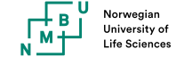
Norwegian University of Life Sciences (NMBU)
Associate Professor in Statistics (Bioinformatics and Applied Statistics, Ås). Teaching STAT340, STAT210, and STIN300, statistical consulting, and PhD/MSc supervision.
Academic institutions, research centres, industry innovation partners, and international scientific consortia I collaborate with.

Associate Professor in Statistics (Bioinformatics and Applied Statistics, Ås). Teaching STAT340, STAT210, and STIN300, statistical consulting, and PhD/MSc supervision.
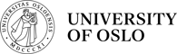
Associate Professor in Statistics (2022–Present), following a Postdoctoral Fellowship (2021–2022) and PhD in Statistics (2014–2018) at the Department of Mathematics.
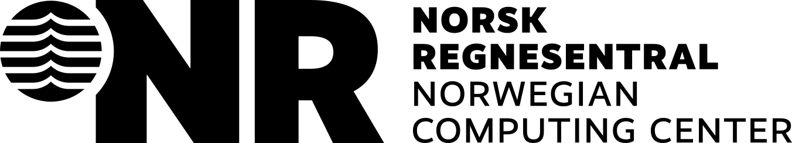
Researcher / Senior Researcher (2018–2020) in SAMBA (Statistical Analysis, Machine Learning, and Image Analysis), with ongoing collaborations across BigInsight, Integreat, and TRUST.
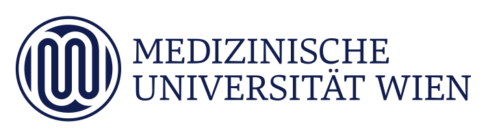
Visiting researcher (2017 NORBIS grant) and long-standing collaborator at the Center for Medical Data Science on BGNLM, FBMS, fractional polynomials, and STRATOS.
Associate Professor in Statistics (2022–2025), providing statistical consulting and ongoing PhD co-supervision in bioinspired AI, reservoir computing, and software analytics.
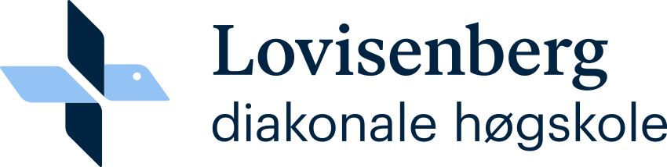
Ongoing statistical consulting and methodological collaboration (2022–Present) on clinical, nursing, and health-sciences research studies.
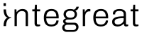
Norwegian Centre for Knowledge-Driven Machine Learning, integrating statistical reasoning and domain knowledge with machine learning for transparent, uncertainty-aware AI.
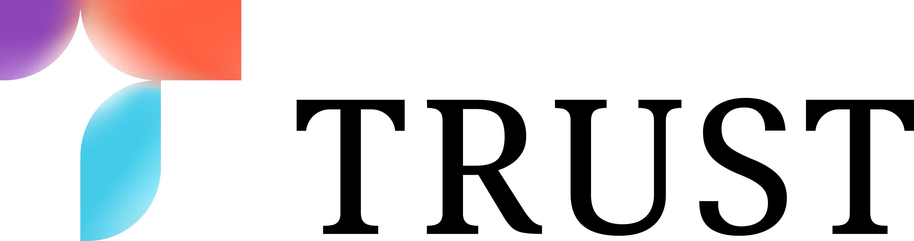
National Research Council of Norway AI centre led by UiO, SINTEF, and Norsk Regnesentral, advancing trustworthy, interpretable, calibrated, and safe artificial intelligence.
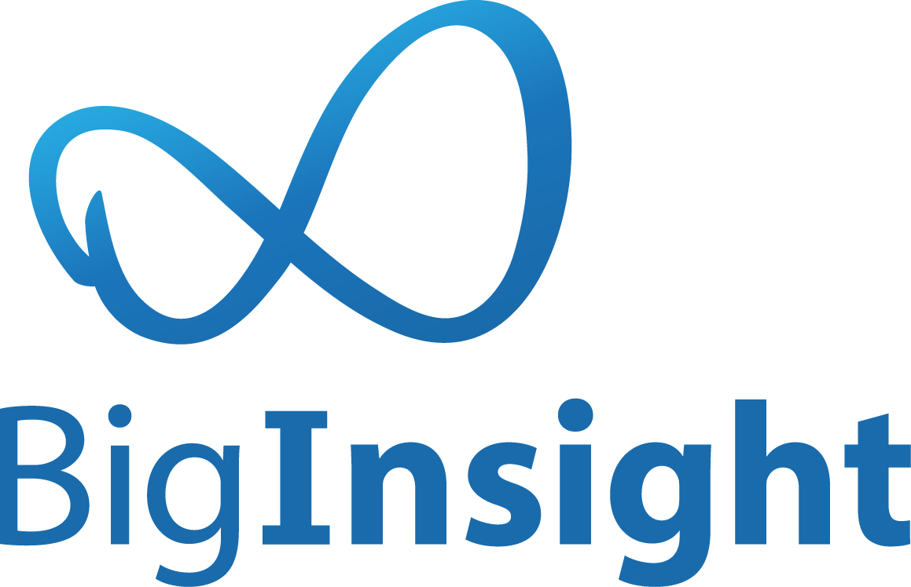
Research Council of Norway SFI developing scalable statistical and machine learning tools for high-dimensional data, risk modelling, and industrial innovation.

International consortium advancing Bayesian Deep Learning (BDL) and uncertainty quantification. Contributing author to the Handbook of Bayesian Deep Learning and the ICML 2024 Position Paper.

STRengthening Analytical Thinking for Observational Studies (Topic Group 2): collaborative research on variable selection, functional forms, and Bayesian model averaging.
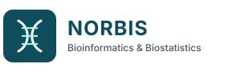
Norwegian National Research School in Bioinformatics, Biostatistics, and Systems Biology; awarded the 2017 NORBIS international travel grant for research at MedUni Wien.
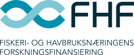
FHF-funded research project (with IMR, NMBU, Nofima, Skretting, and Mowi) studying vitamin and mineral requirements for Atlantic salmon health using Bayesian fractional polynomials and optimal dosage estimation.
Research Council of Norway BIA / FINPRO innovation collaboration between the Norwegian Computing Center (NR) and Exabel AS on scalable machine learning and AI for financial time-series modelling.
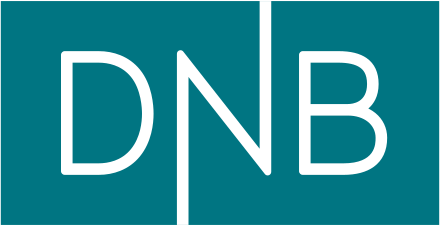
Research Council of Norway / BigInsight collaboration between the Norwegian Computing Center (NR) and DNB on statistical machine learning and financial risk modelling.
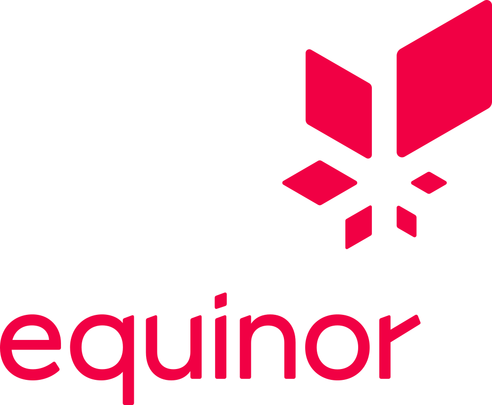
EquinorSecured full Equinor funding for a 3-year postdoctoral research position through the Equinor Akademia scheme.
 University of Copenhagen
University of Copenhagen
Joint doctoral co-supervision with the Department of Veterinary and Animal Sciences on Bayesian modelling of disease occurrence.
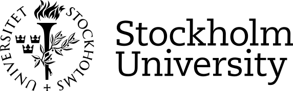
Master's thesis supervision at the Department of Statistics (2020–2021) and ongoing collaboration on subsampling MCMC and FBMS.
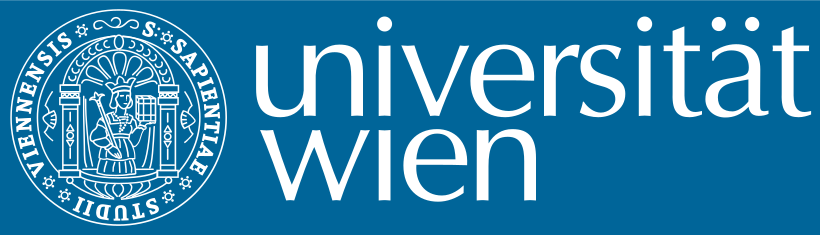
Master's thesis supervision collaboration with the Department of Mathematics, University of Vienna, Austria.
Master of Science in Operations Research (2012–2014). Recipient of the 2014 NIMA Award for Best MSc Graduate.
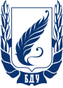
Belarusian State UniversitySpecialist Diploma in Applied Mathematics and Computer Science (2008–2013; First Award for Student Research, 2013) and CDAM proceedings collaborations.